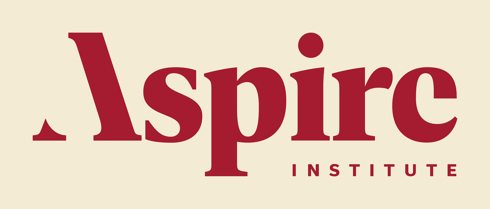
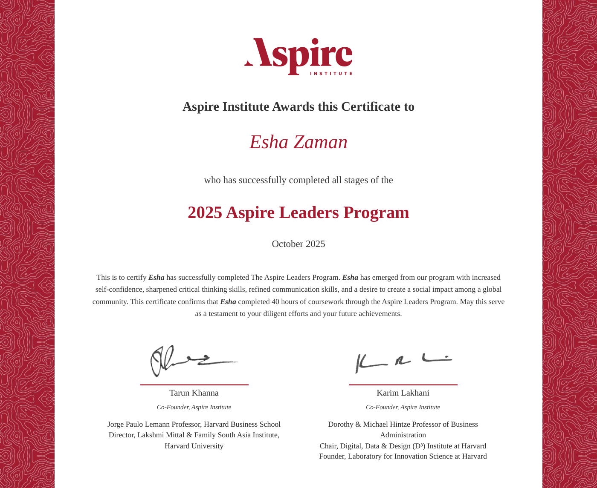
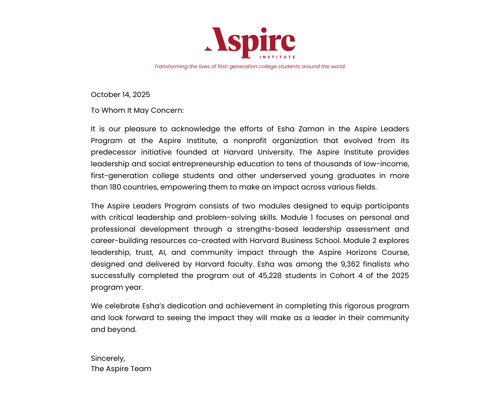

← Leadership & community serviceAspire Leaders
Program participant · Leadership development · 2025
Aspire Leaders
Program.
A learning experience in communication, critical thinking and social impact.

My experience
Learning to contribute with purpose.
I completed the Aspire Institute’s 2025 leadership-development program, including 40 hours of coursework focused on critical thinking, communication and social impact.
2025Program completed40 hoursCoursework
About the Aspire Leaders Program ↗Completion & recognition
My Aspire credentials.

